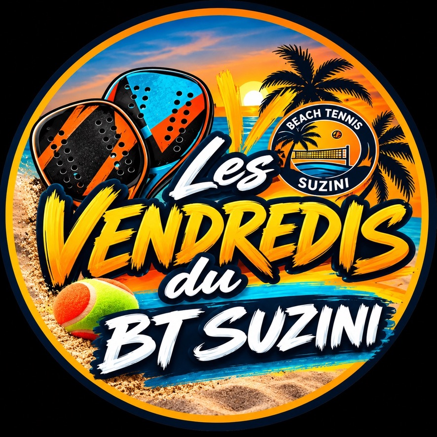

BT250 - DOUBLE DAMES & DOUBLE MESSIEURSLes Vendredis
La programmation est disponibleConsultez les matchs et les horairesPayer en ligne sur SumUp ↗Les Vendredis
du BT Suzini
6 novembre 2026 · à partir de 18 h
TC Suzini · accueil 17 h 45 · 10 € par joueur